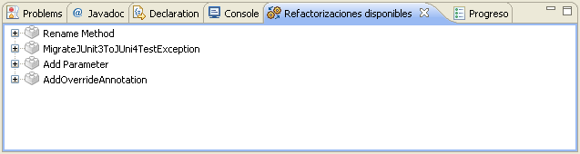

Ejecutar Refactorizaciones Desde el Editor JavaEjecutar Refactorizaciones Desde el Editor Java
Ejecutar Refactorizaciones Desde el Editor JavaEjecutar Refactorizaciones Desde el Editor JavaCuando se selecciona un fragmento de texto en el editor de Java por defecto en Eclipse, el menú
Operaciones Disponibles se activa. Para iniciar una refactorización sobre el elemento seleccionado
existen dos posibilidades:
Haga clic con el botón derecho sobre el elemento del editor sobre el que quiere aplicar la refactorización, y seleccione la opción Refactorización Dinámica > Operaciones Disponibles en el menú desplegable.

Menú desplegable: Operaciones Disponibles
Seleccione la opción de menú Refactorización Dinámica > Refactorizar > Operaciones Disponibles en Eclipse.
Antes de continuar, el plugin comprueba si el elemento seleccionado sobre el texto del editor representa un único elemento válido como entrada para algún tipo de refactorización. Esto es, deberá ser una clase, un método, un atributo, un argumento formal de un método o un parámetro formal de una clase genérica. Si no es así, se mostrará un mensaje de aviso.

Si la selección es válida, el plugin comienza a construir el modelo interno que utilizará. Cuando el progeso acaba, se muestra una ventana de selección con las refactorizaciones disponibles para el ámbito del tipo de elemento seleccionado.

Es ahora cuando se debe seleccionar la refactorización que se quiere aplicar. Una vez seleccionada,
pulse el botón Aceptar para iniciar el proceso de refactorización.
Cuando se selecciona un elemento válido como entrada para una refactorización de las vistas de Eclipse, la vista "Refactorizaciones dsiponibles" actualiza su contenido con las refactroizaciones del ámbito de dicho elemento. Después se de hacer un doble-click en alguna de ellas para comenzar su ejecución.

vista "Refactorizaciones disponibles"
Las tarea relacionada al final de la página le conducirá a información más detallada acerca de cómo configurar y ejecutar refactorizaciones.